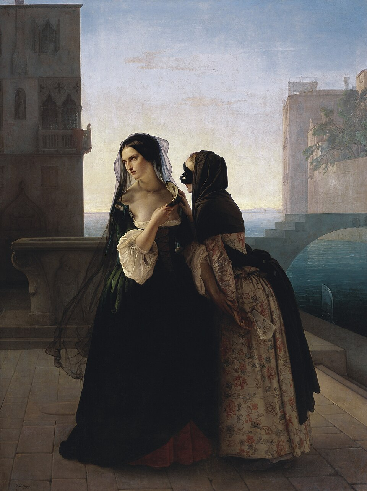
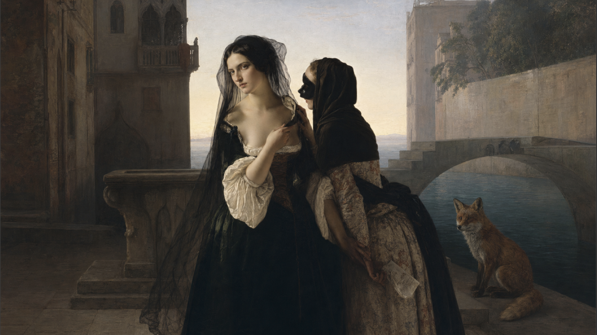

Dans le tableau original on peut voir deux dames de Venise, Maria à gauche et Rachele à droite.Deux femmes nobles vivant dans la République de Venise. Dans cette scène, Maria, qui sait que son mari l'a trahit avec une autre femme et veut se venger, écoute les chuchotements de Rachele, qui lui conseille d'utiliser la dénonciation politique d' adultère contre son mari anonymement, comme moyen de vengeance.

Dans le tableau nous pouvons voir deux dames de Venise, Maria à gauche et Rachele à droite.Deux femmes nobles vivant dans la République de Venise. Dans cette scène, Maria, qui sait que son mari l'a trahit avec une autre femme et veut se venger, écoute les chuchotements de Rachele, qui lui conseille d'utiliser la dénonciation politique d' adultère contre son mari anonymement, comme moyen de vengeance. Mais au second plan à droite, nous pouvons voir un renard observer et écouter attentivement la scène. Il parrait que ce renard est en réaliter envoyer par le mari afin de le mettre au courant de ce qui se complote derrière son dos.